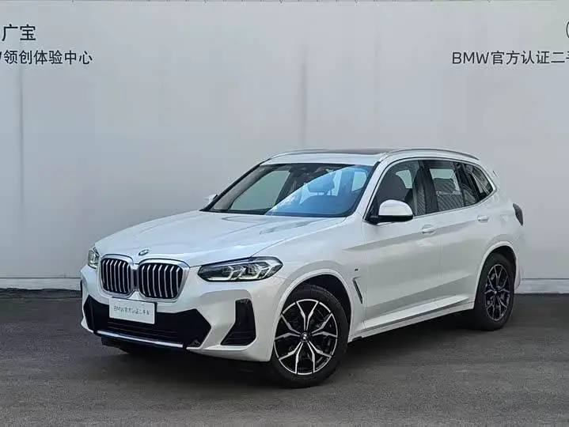
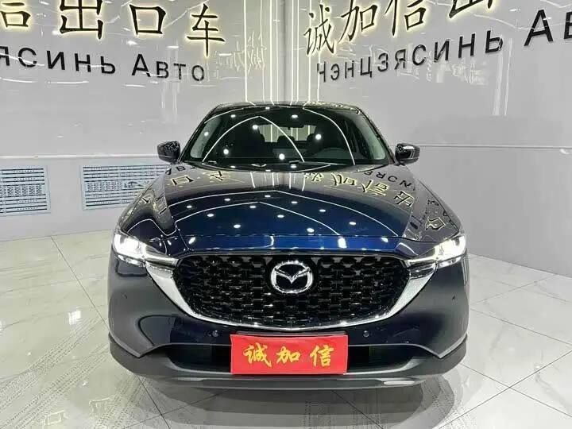
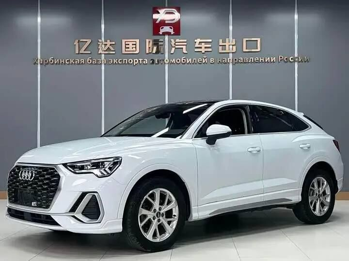
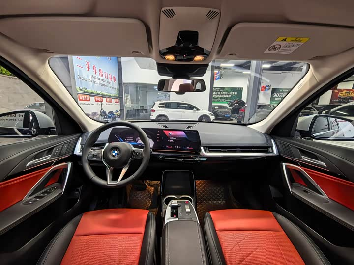
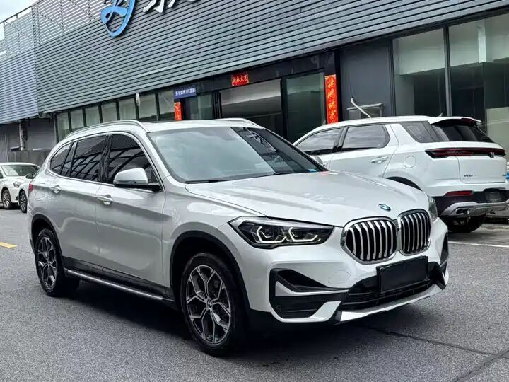
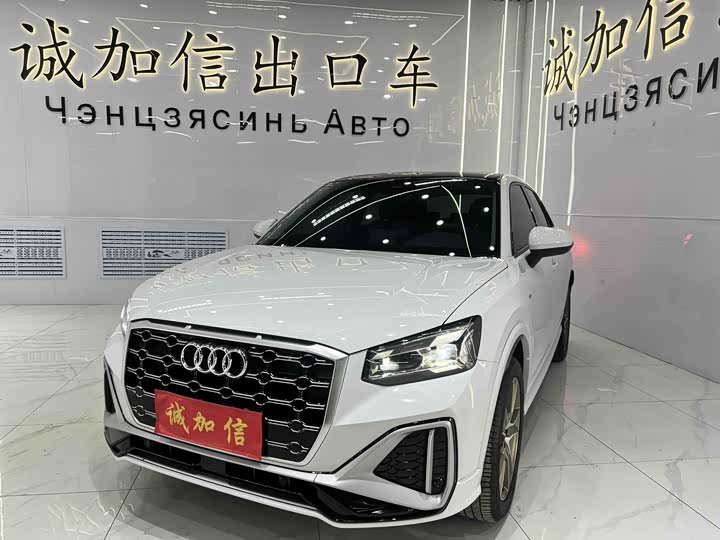

Авто и мото из Японии, Кореи, Китая
в Томске под ключ
Привозим автомобили и мотоциклы из Японии, Кореи и Китая в Томске за 25–40 дней. Расчёт пошлины и утильсбора при вас, по официальным базам. Вы — первый собственник в РФ.
Доставка и маршрут до Томск
После выкупа и растаможки во Владивостоке автомобиль идёт Томск автовозом. Это финальный этап общего срока 25–40 дней под ключ.
≈ 5,600 км по автодороге (Транссибирское направление).
≈ 11–15 дней (оценка по типовым перевозкам; входит в общий срок 25–40 дней).
Расстояния — по данным маршрутных сервисов (avtodispetcher.ru, ati.su). Сроки автовоза — усреднённая оценка по перевозчикам Владивосток → Томск.
Какие авто популярны: рынок и наличие
Слева — структура импорта подержанных авто в Россию по данным «Автостата». Справа — что сейчас в наличии у POWER Car под заказ.
Импорт б/у авто в РФ по странам
Источник: аналитическое агентство «Автостат», 1 кв. 2026 (доли стран-поставщиков подержанных авто). Лидер по маркам среди ввозимых из Японии — Toyota (33,5%).
В наличии у POWER Car: 79 авто
Топ марок в наличии: BMW (11), Mercedes-Benz (11), Audi (7), Hyundai (5), Honda (4), Volkswagen (4).
Данные нашего каталога на момент публикации. Состав наличия обновляется.
Популярные модели под заказ в Томске
Для сибирских дорог отдаём приоритет полноприводным кроссоверам, но привезём любую модель под ваш бюджет.

🇨🇳
🇨🇳
🇨🇳
🇨🇳
🇨🇳
🇨🇳Офис в Томске
проспект Кирова, 58, 305 офис
3 этаж · Советский район · 634012
📞 +7(913)853-33-05
🕒 Пн–Сб 9:00–18:00 (Томск)
Что учесть в Томске
- Резко-континентальный климат: зимой нередко −30…−40 °C — желателен предпусковой подогреватель и аккумулятор с запасом.
- Снег, наледь и перепады — увереннее идут полный привод (AWD/4WD) и кроссоверы; обязательна зимняя резина.
- Реагентов на дорогах меньше, чем в мегаполисах, но межсезонная влага и сколы — рекомендуем антикор-обработку при подготовке.
- Японские авто хорошо держат вторичную цену и ликвидны в регионе.
Получите 3 варианта под ваш бюджет в Томске
Бесплатный подбор и честный расчёт стоимости под ключ. Без предоплаты за подбор.
Подобрать авто Томск